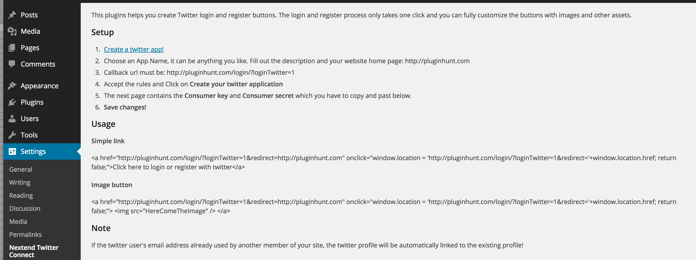
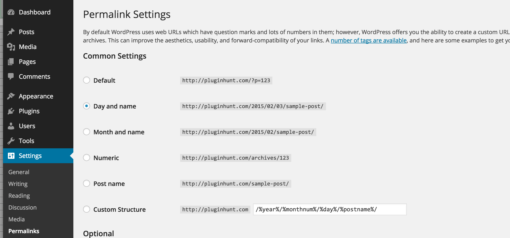
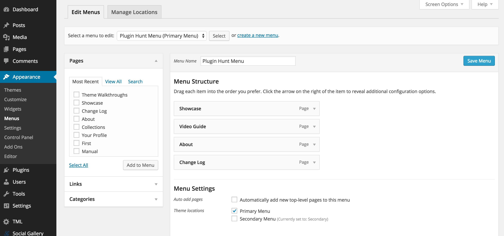
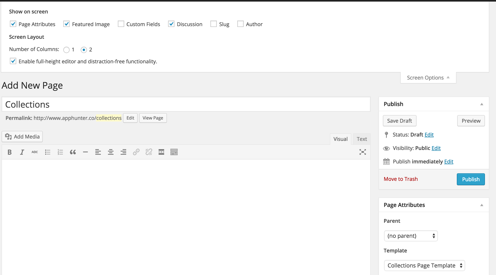
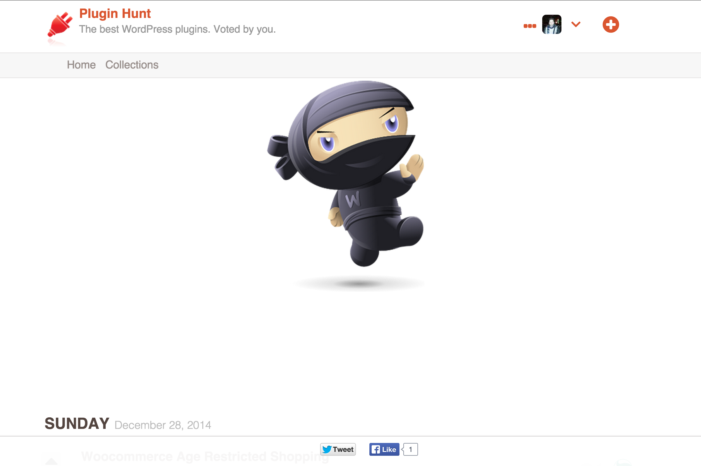
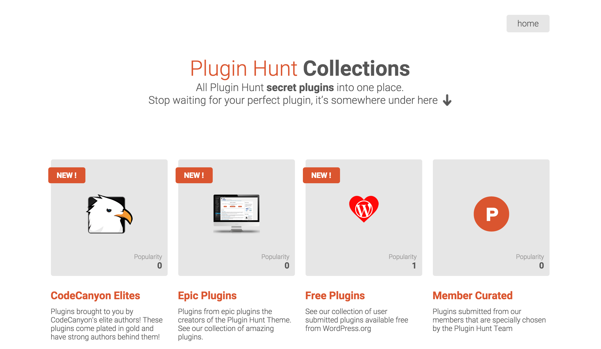
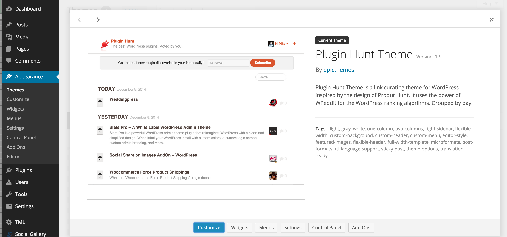
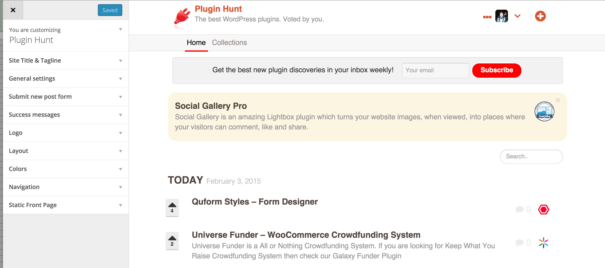
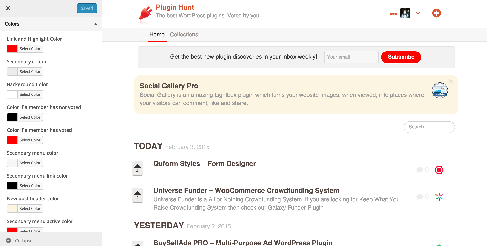

Welcome to the Plugin Hunt Theme documentation. The theme is seriously easy to use. But in case you have issues, we have detailed documentation for you to follow
The Plugin Hunt Theme is a typical WordPress theme with some special features. It is the perfect theme for creating your very own curated content website.
To setup and install the Theme you will need to follow the steps below
The first 3 areas of the setup are very easy, more information on the other stages are below
There are a number of plugins which have been used to give the theme extra functionalities and to improve the user experience. These have been carefully hand picked through many years of using plugins. The plugins currently used are listed below
Nextend Twitter Connect: This plugin comes with instructions on how to use the plugin on it's settings page (shown below). Create your twitter app, and then enter your keys and you're good to go.

Nextend Facbook Connect: This plugin comes with instructions on how to use the plugin on it's settings page (similar to above). Create your facebook app following the settings, and then enter your keys and you're good to go.
Upon install the Theme will present to you (on the "Settings" page the welcome message). Currently the only known issue is that your server should be running version 5.3 (or greater) otherwise you will get an "activation error" when trying to activate
The Twitter Login functionality requires that your permalinks are set to either post name, or day and name. If you leave your permainks set to default then the Twitter login functionality will not work since it will say that the page cannot be found. The recommend setting here is post name.

Like any Theme, the Plugin Hunt Theme uses menus to help navigate around your website. Taking a look at the header of the website (shown below)
The menu held in "..." next to the profile photo is the "Primary Menu" and the "Home" and "Collections" is the "Secondary Menu" they have been named this way since our early version only had the "..." menu (and it was the Primary menu) as shown in the screenshot below

There's also the icon of the downward pointing arrow. This is reserved for networking type information. It will show
"Your Profile": This is your "author.php" page which has been extensively customised to be an interactive post listing of all the posts you have made
"Logout": The link to log out of your account
As a bonus feature with the Plugin Hunt Theme we have included our "collections" template for you to use and edit for yoru own purpose. What is a "template" well, in the theme files you'll see the following .php file
"collections.php"
This is a page template, with Template Name "Collections Page Template"
<?php
/*
* Template Name: Collections Page Template
* Description: A Page Template with a darker design.
*/
?>
This page has some text which you may wish to customise as well as a block of code for outputting the categories you've set in the admin of the website. It is advised that you create a copy of this template and name it something else e.g. "collections-modification.php" and update the Template Name to "Collections Page My Site"
Then when you create your collections page. Choose your custom page template to prevent any changes you have made to the "collections.php" being lost on update. The way to set the page template of a page is shown below

The Plugin Hunt Theme comes with our own implementation of a "Collections" type feature. To accomplish this it uses the creation of WordPress categories coupled with the WP Custom Category Featured Image plugin and our special "category.php" pages to display additional information plus cool sharing

We've also written an amazing page template for you to use in your own theme as demonstrated here and shown below. This is handled by the code block in the collections.php and uses the WP Custom Category Featured Image plugin.

We have some great things planned for the Collections aspect of the website. If you want to see anythign in particular please let us know.
All of the plugins customisation options can be assessed via the Theme Customisation menu. To access these options choose the "Customize" option under "Appearance"

Once you've clicked on the "Customize" link you'll be able to change pretty much everything in the theme. From header colors, link colours and even set your navigatin menus

With an example of the "Colors" of the Theme customiser shown below

If there are any areas in the settings that do not appear to apply, then you may need to slightly edit the settings and then save them. To esure that nothing strange has occured in the initialisation of them.
We are proud to continue building our showcase of the "Theme in the Wild" if you have a cool website that you want to see listed here in the showcase (and on the main demo website) please do get in touch: mike@epicplugins.com
Epic Plugins and Epic Themes in house demos
Non-affiliated websites (real customer setups)
*Disclaimer: Epic Plugins and Epic Themes are not responsible for the content of non-affiliated websites. You can be assured that the in-house demos illustrate exactly what the theme you have purchased can do. However some external websites may have either customised the theme to their own needs, or be running older versions of the themes (so they may not display the same characteristics as the main demonstration website).
If you have any questions about the theme or any of the themes in the showcase. As usual get in touch.